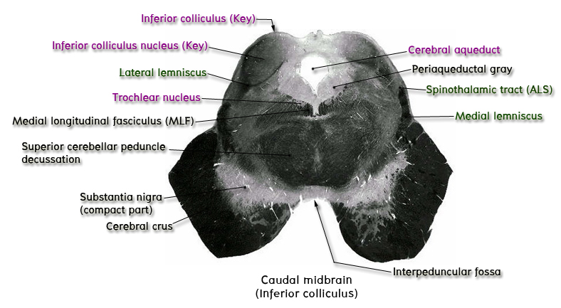

7. ระดับ caudal part of midbrain หรือระดับ inferior colliculus
Section ของ brain stem ระดับ midbrain ถูกแบ่งเป็น 2 ส่วนตามแนว coronal plane ที่ตัดผ่าน cerebral aqueduct of midbrain ออกเป็น tectum และ cerebral peduncle

ให้ชี้แสดง tectum ซึ่งเป็นส่วนที่อยู่ posterior (dorsal) กว่า coronal plane เนินที่อยู่บนผิวด้านหลังของ tectum ของ midbrain ในระดับนี้คือ inferior colliculus ให้ชี้แสดง nucleus of inferior colliculus ซึ่งเป็น key structure ที่ต้องเห็นในระดับนี้ โดยมีลักษณะเป็น oval nucleus อยู่ลึกกว่า inferior colliculus และถูกล้อมรอบทางด้าน inferolateral โดย nerve fibers ของ lateral lemniscus (จะได้เรียนในเรื่อง auditory system) ทำให้มีลักษณะคล้ายแก้วแชมเปญ
ให้ชี้แสดง cerebral peduncle ซึ่งเป็น area ที่อยู่ ventral (anterior) กว่า coronal plane ที่ตัดผ่าน cerebral aqueduct ภายใน cerebral peduncle ยังแบ่งออกเป็น 3 ส่วนใหญ่ ๆ คือ